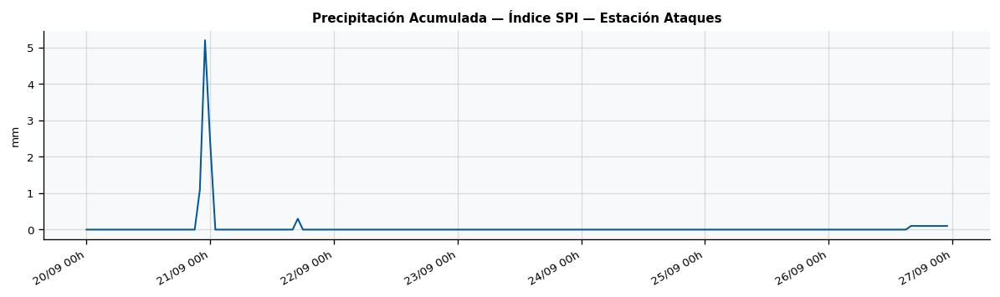
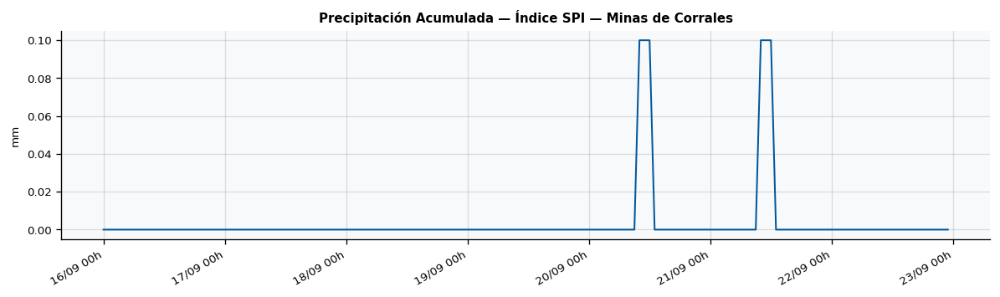
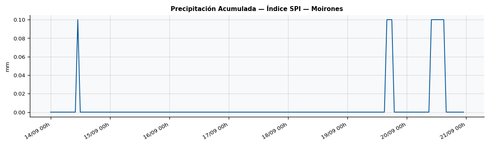
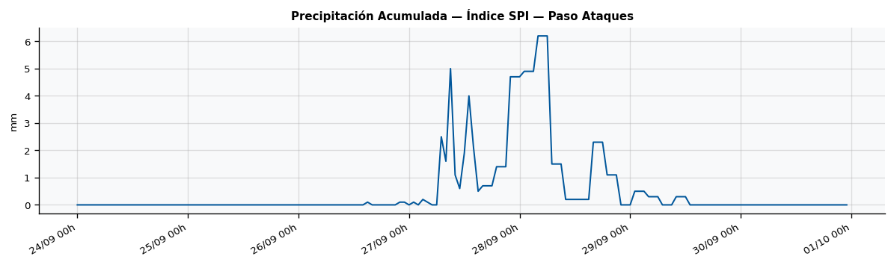
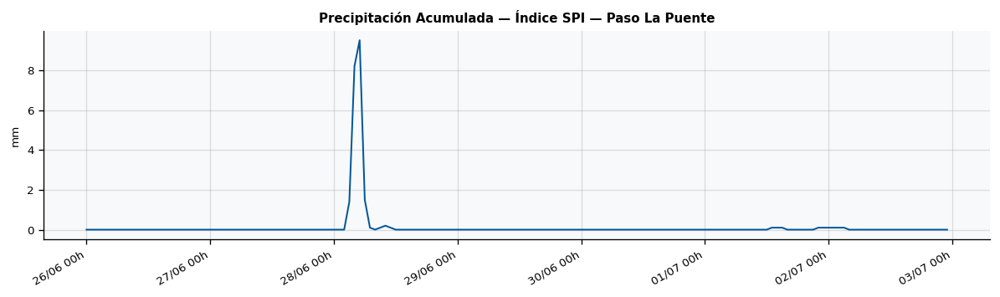
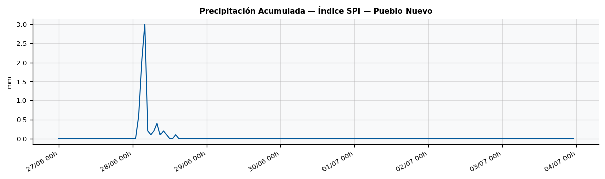
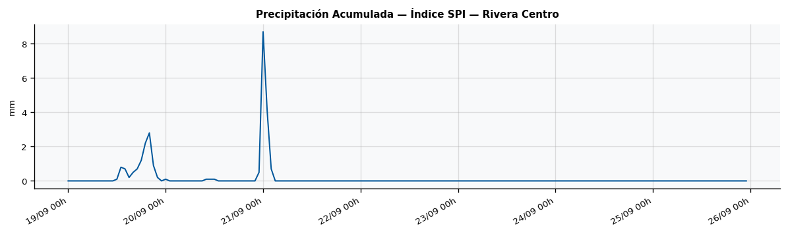
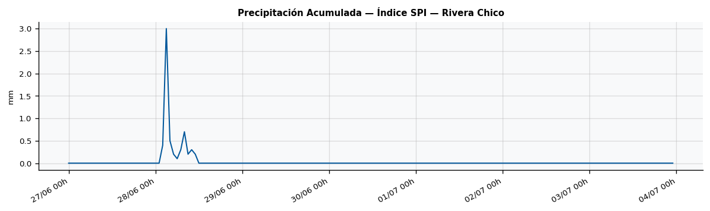
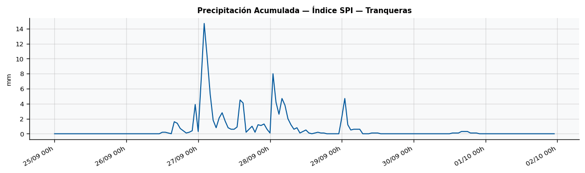
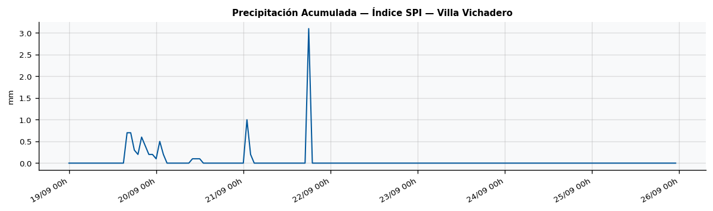

Departamento de Rivera · 2026-06-26
Expresa cuan alejada esta la precipitacion del periodo respecto a la media historica, medida en desvios estandar. Permite comparar la condicion hidrica entre localidades y detectar sequias en curso.
Interpretacion: >= 2: Ext. humedo | 1-2: Muy humedo | -1 a 1: Normal | -1 a -1,5: Sequia moderada | < -2: Sequia extrema









